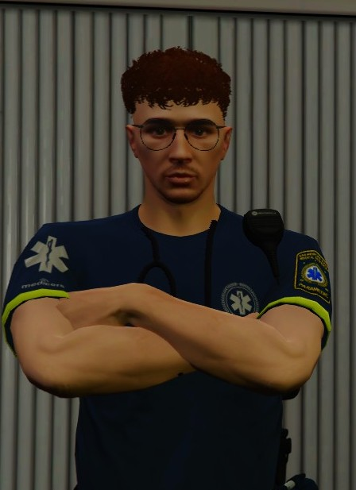

Dirección del Hospital
Conoce a nuestro equipo directivo y al personal destacado que lidera el Servicio Médico de San Andreas
DIRECCIÓN

Directora de EMS
Lia Smith
Directora Ejecutiva
Lidera el equipo médico con más de 10 años de experiencia en gestión hospitalaria y emergencias.
Gestión
Emergencias
Administración
DIRECCIÓN

Director de EMS
Nikolai Belgrano
Director Operativo
Especialista en operaciones de emergencia y coordinación de equipos de respuesta rápida.
Operaciones
Coordinación
Logística
SUB-DIRECTOR

Sub-Director
Evaristo García
Sub-Director Médico
Responsable de supervisar operaciones médicas y apoyar la dirección en la gestión del hospital.
Supervisión
Gestión
Operaciones
MÉDICO CLÍNICO

Médico Clínico
Thomas Graves
Especialista en Clínica y Traumatología
Especializado en medicina clínica con experiencia en traumatología. Atención integral al paciente.
Medicina Clínica
Traumatología
Atención Integral

Empleado del Mes
Samuel
Paramedico Destacado
Reconocido por su excelencia en atención prehospitalaria y dedicación excepcional a los pacientes.
Emergencias
Atención
Dedicación